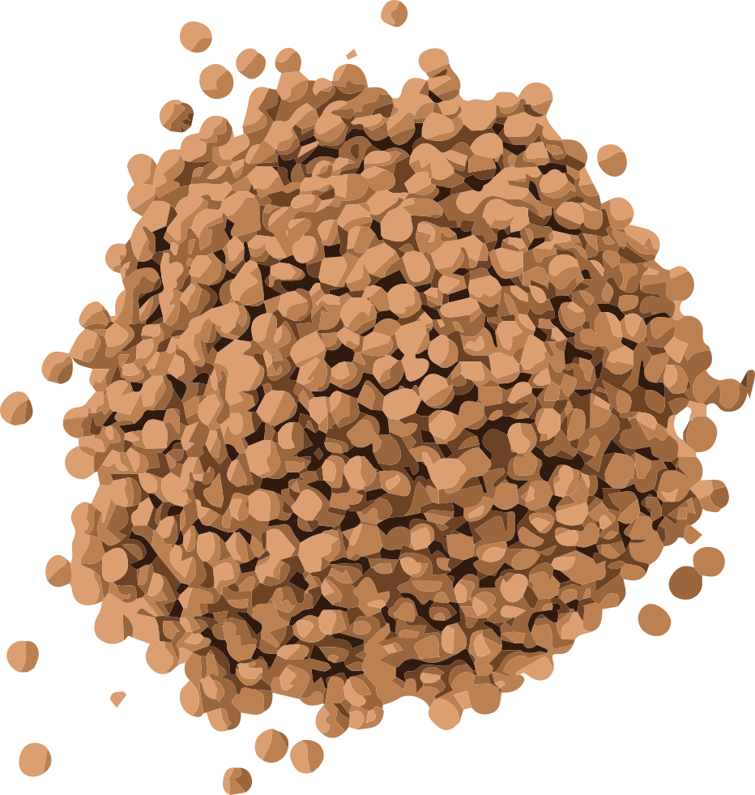

2024 立委候選人 － 喵立翰
我堅信，藉由推動更完善的貓咪福利和相關政策，更是間接地投資於台灣的未來。畢竟，民眾的身心健康與工作熱情是推動經濟的核心動力。透過完善的貓咪福利政策，為台灣的 GDP 經濟帶來巨大效益。
因此，我期望能在立法院內推進這些政策，確保每一隻貓咪都能得到他們應有的照顧，同時也為台灣的經濟發展助一臂之力。讓我們一同護航台灣的幸福經濟，從照顧每一隻貓咪開始。

打造休閒天堂！
推廣寵物休閒與娛樂場所
讓愛更加專業！
推廣寵物飼養教育
為毛孩子謀福利！
推動寵物醫療保障方案
2024 立委候選人 － 喵立翰
我堅信，藉由推動更完善的貓咪福利和相關政策，更是間接地投資於台灣的未來。畢竟，民眾的身心健康與工作熱情是推動經濟的核心動力。透過完善的貓咪福利政策，為台灣的 GDP 經濟帶來巨大效益。
因此，我期望能在立法院內推進這些政策，確保每一隻貓咪都能得到他們應有的照顧，同時也為台灣的經濟發展助一臂之力。讓我們一同護航台灣的幸福經濟，從照顧每一隻貓咪開始。
最新活動

2023.12.26
參與台北寵物論壇，爭取貓咪友善環境
炎炎夏日的周六，我走進了台北寵物論壇，帶著一副貓耳髮箍，決定要全力宣傳「貓咪至上」的理念！我相信，我們的都市中，每一隻貓咪都應該有自己的 VIP 休憩空間。

2023.12.24
掃街模式開啟！帶著你的貓耳，來和我一起走！
街上氣氛真的很棒，從小孩到大人，甚至有些狗狗朋友都帶著貓耳來找我握手，真的太可愛了！這次的活動不僅讓我看到大家的熱情，更加堅定了我推進「貓咪友善環境」政策的決心。

2023.12.20
收容所模特兒大比拼！
今天的收容所不再是一片寂靜。為了讓更多人認識到這裡的毛孩子，我們舉辦了一場前所未有的「模特兒走秀」！
政策議題
為毛孩子謀福利！
推動寵物醫療保障方案
設立寵物醫療基金
設立寵物醫療基金
設立寵物醫療基金
打造休閒天堂！
推廣寵物休閒與娛樂場所
建立寵物公園
每年撥款新台幣 5 億元，用於在各大都市建立專屬的寵物公園。根據初步規劃，預計在第一年內，將在全國範圍內建立至少 10 座寵物公園。
設立寵物醫療基金
鼓勵商家提供寵物友善的環境，並為參與的商家提供稅收優惠。預計在政策實施後的首年，將有超過 500 家商家加入此計畫。
設立寵物醫療基金
與各大寵物社團和組織合作，每年舉辦至少 5 場大型的寵物活動，包括寵物才藝比賽、飼養知識工作坊等。
讓愛更加專業！
推廣寵物飼養教育
建立寵物飼養教育中心
每年撥款新台幣 3 億元，用於在全國各地建立專業的寵物飼養教育中心。預計在第一年內，在全國至少 5 大城市設立教育中心。
推廣寵物飼養課程
與學校、社區組織和寵物社團合作，推出一系列免費的寵物飼養課程。預計每年將有超過 10,000 名市民受益。
製作教育資料
出版寵物飼養手冊、影片和線上課程，讓所有有意飼養寵物的家庭都能輕鬆取得正確的知識。
您的小筆捐款，是每隻毛孩未來的大大動力！
目前小額捐款贊助總金額
79,851,618
您的小筆捐款，是每隻毛孩未來的大大動力！

目前小額捐款贊助總金額
79,851,718

喵星人之友
NT$600
已有 9957 人贊助

喵星大使
NT$6,000
已有 2000 人贊助

喵星傳奇
NT$60,000
已有 999 人贊助
捐贈者應注意事項